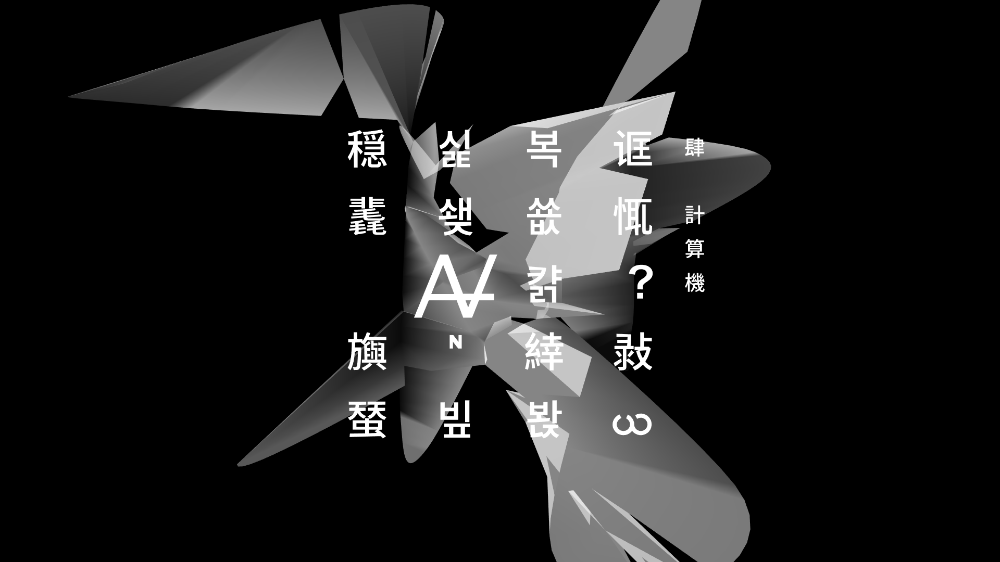

POETRY³
Program, Real-time, 2016
Can computers independently create a masterpiece?
POETRY³ is a computer program developed by Ren Yuan to explore this question. Maybe this can be achieved in a certain time through a great amount of random generation. However, it is far from something easy and only has a very small chance of happening. Moreover, whether a masterpiece is created or not needs to be decided by an aesthetic subject. If computers have aesthetic awareness, it is certainly different from that of human being. Therefore, the aesthetic judgment here in this question should be decided by human being. Over the generation process, human’s aesthetics stimulates the computer to generate works more and more close to a masterpiece. The program developed by Ren Yuan is based on genetic algorithm. It regards poetry as a population. The poems more close to people’s aesthetics in the population have a higher probability of passing their genes to the next generations. Meanwhile, mutation ensures the diversity of individuals. After several generations of evolution, the masterpiece may appear.
